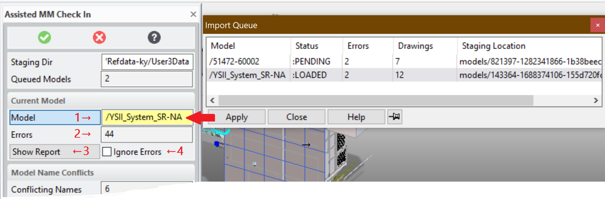
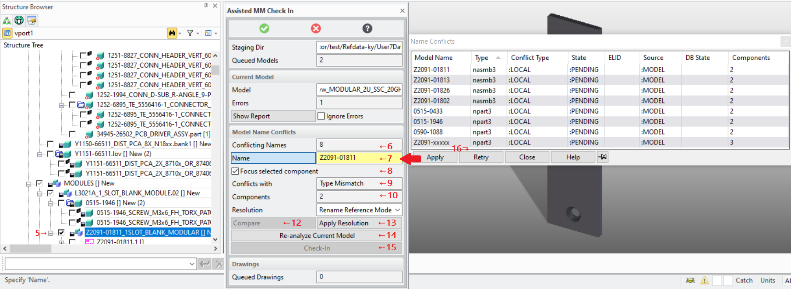
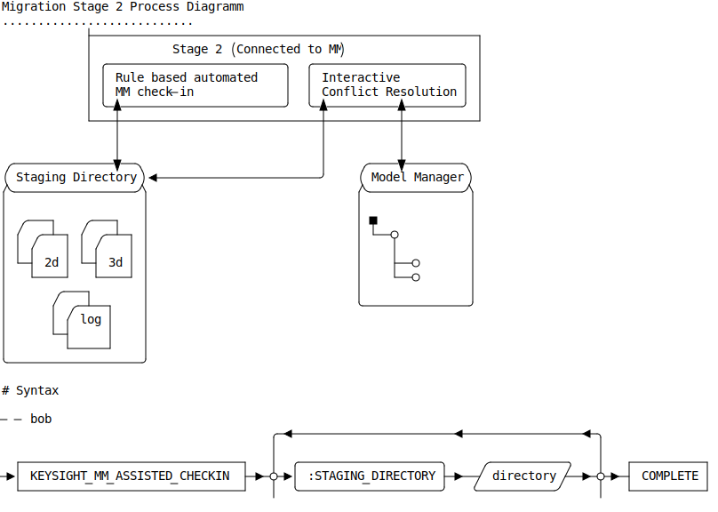

KEYSIGHT_MM_ASSISTED_CHECKIN [Public Dialog]
Package: keysight-migrator (Nick name(s): :kym)
Assisted _ModelManager check-in of 2d/3d models in a staging directory
This dialog can be activated by:
- Selecting the command Prepare MM Import in the Keysight Migrator group of the Modeling ribbon (see also The Extension Module User Interface
- Typing
KEYSIGHT_MM_ASSISTED_CHECKINinto the Modeling command line.
Dialog
The dialog has two main distinct, sequential phases to facilitate check-in of 3d models (phase 1) and drawings (phase 2). Before drawings can be checked-in, the 3d model has to be checked-in to ModelManager sucessfully.

The assisted check-in process begins with selection of the staging directory which was producedmust by the.
KEYSIGHT_MM_IMPORT_ASSEMBLER dialog.
- Selection of the staging folder (generated by the
KEYSIGHT_MM_IMPORT_ASSEMBLERdialog). - Displays the number of models in the selected staging folder which are available for check-in.
Checking in 3d Models
Several steps are needed to prepare a model for ModelManager check-in:
Model Selection

Each model has to be loaded one-by-one for check-in.
- The model to process can be chosen
from the Import Queue selection table by double left-click or by single click to select followed by a click
on the
Applybutton. - The number of components in the current models which were flagged by the first migration stage. Since these errors were not repaired in stage 1, it is assumed that the model is supposed to be checked-in in its corrupt state.
- Show the error report created in the migration stage 1. This action is only available if there are any errors
- Option to allow a model to be checked-in despite of errors. ⚠️ Must be checked in order to check-in a corrupted model.
- The model to process can be chosen
from the Import Queue selection table by double left-click or by single click to select followed by a click
on the
Name Conflict Resolution
In ModelManager each distinct, sharable structure component must have a unique name. If more than one structure component share the same model model name, that conflict must be resolved by using the tools provided by actions in the Model Name Conflicts panel of this dialog or manually by manipulating the currently loaded model.

A model name conflict selected for conflict resolution. All model components with the conflicting name are highlighted in the structure browser.
The number of model name conflicts found in the current model.
The currently selected model name selected for conflict resolution. The model name can directly selected in the structure browser by double-click, or in the Name Conflicts table.
Information about the type of conflict. Can be
- Type mismatch - Components of different type (part/assembly) have the same name.
- Local - More than one local component of the same type have the same name.
- Database ID - name revision and status of a component with that name in the database
The number of distinct components sharing the same model name.
Options to resolve the name conflict. Model name conflicts are resolved pairwise. Hence it might be necessary to resolve more than one conflict for the same model name.
The resolution options depend on the context of conflict:
+---------------+-----------------+---------------------------+ | Check-Model | Component Types | Resolution Options | | Source | | | +===============+=================+===========================+ | database | incompatible | * Rename Reference Model | +---------------+-----------------+---------------------------+ | database | compatible | * Rename Reference Model | | | | * Replace Reference Model | +---------------+-----------------+---------------------------+ | local | incompatible | * Rename Reference Model | | | | * Rename Check Model | +---------------+-----------------+---------------------------+ | local | compatible | * Rename Reference Model | | | | * Rename Check Model | | | | * Replace Reference Model | | | | * Replace Check Model | +---------------+-----------------+---------------------------+
- Check Model
- The term Check Model refers to a model in or loaded from the ModelManager database or a (random) local model which takes part in the conflict.
- Reference Model
- The term 'Reference Model' always refers to a local model which participates in a name conflict.
- Rename ...
- A conflict resolution option which assigns a unique, auto-generated model name to the Check- or Reference Model
- Replace ...
-
A conflict resolution option which destructively replaces all instances of a part/assembly with the Check Model, which is another part/assembly. If the Check Model is not in-session, it is loaded from the database.
⚠️ Always use the
Compareoption (11) to make sure the Replace operation does not change the model in a bad way. In cases Replace did change the model in a bad way the UNDO action can be used to revert the change. In that case the the model must be scanned again with the Re-Analyze action (13) to pick up the changes.
Compare two conflicting components. ⚠️ The comparison is performed by an external dialog which terminates this dialog. Just restart this dialog once comparison is complete to resume name conflict resolution.
Apply the resolution selected in (11).
Re-analyze the current model after a manual model change including rollbacks (UNDO) of previous conflict resolutions. ⚠️ Model Analysis is an expensive operation and may take a while.
Check-in the current model to ModelManager. This actions is available only when all conflicts are resolved. This action opens the ModelManager Save Modified dialog to perform final checks and allow for a review of the components being checked in.
Retry failed queries. Particularly when working with large models, model name queries fail. The
Retrybutton can be used to recover from these failures.
The conflicting name currently selected for
Checking in Drawings
Description
This dialog implements stage 2 of the migration process. Basic ModelManager know-how is required.

Options
:STAGING_DIRECTORY-
The models in native Modeling format (.sd*) prepared by the migration stage 1 dialog
KEYSIGHT_MM_IMPORT_ASSEMBLER. Filenames are component sysids to guarantee uniqueness.